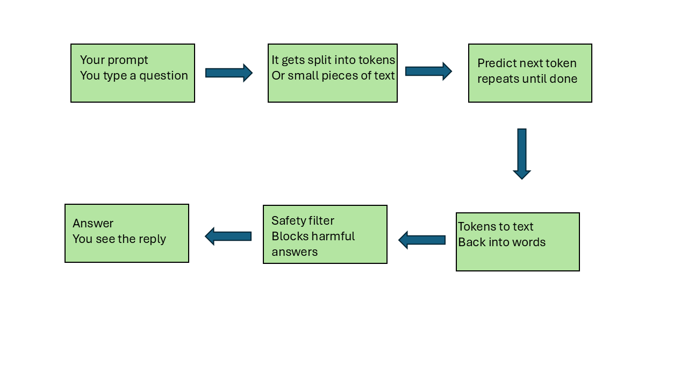

How a Chatbot Answers
Training
Before a chatbot can answer anything, its large language model (LLM) has to be trained. During training, the model reads a huge amount of text, such as books, websites and articles, and learns which words usually come after which. It does not memorise facts like a database; it learns patterns in language.
From prompt to answer
When you type a question, called a prompt, the chatbot first splits it into small pieces called tokens. A token can be a whole word, part of a word or a punctuation mark. The model then looks at all the tokens and predicts which token is most likely to come next (Vaswani et al., 2017). It adds that token to the text and predicts the next one again, over and over, until the answer is finished. Finally, the tokens are turned back into normal text and checked by a safety filter before you see the answer.

Context window and safety filters
The context window is the amount of text the model can look at at one time, including your prompt and the earlier messages in the chat. If a conversation gets longer than the context window, the model can no longer "see" the oldest parts, so it may forget what you said at the start. Safety filters are extra checks around the model that try to block harmful or dangerous answers.
Training vs. inference
Training is the learning stage, which happens once and takes a very long time and a lot of computing power. Inference is the answering stage, which happens every single time someone sends a prompt. A simple way to remember it is: training is like studying for the exam, and inference is writing the answers.
Why AI needs data centers
Both training and inference need enormous amounts of calculation, so they run in data centers, which are large buildings full of computers. These computers use GPUs, special chips that can do thousands of small calculations at the same time, which is exactly what language models need. All this uses a lot of electricity: training one very large model can produce about five times as much carbon dioxide as an average car over its whole lifetime (Strubell et al., 2019). Data centers used about 415 TWh of electricity in 2024, around 1.5% of the world's total, and this is expected to more than double to around 945 TWh by 2030 (International Energy Agency, 2025). They also use water to keep the hot computers cool, and training the GPT-3 model in Microsoft's U.S. data centers is estimated to have evaporated about 700,000 liters of clean freshwater (Li et al., 2025). So every prompt has a small environmental cost, which is one more reason to use AI with a purpose and not just out of habit.